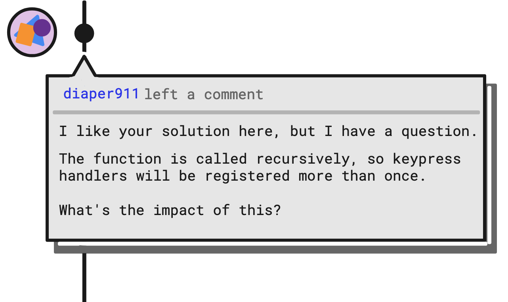
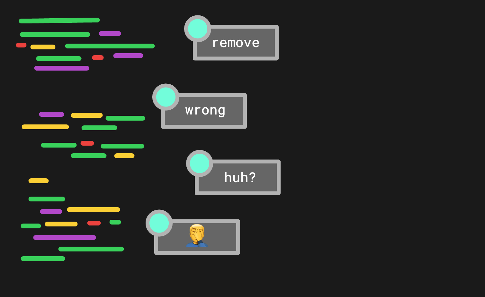

Plain and simple things for team members to follow when reviewing each other's code.
2021-08-29
Reviewing code is not usually a difficult task, but it does take time and effort. You will need to use your “soft skills” as well as your technical expertise to do a good job. Though there is plenty that authors can do to help code review go smoothly, these tips are specifically for the reviewers.
Most of these tips are really basic, but often forsaken. Simple things can go a long way…
Feedback doesn’t have to be strictly critical. Let the author know what they did well too.
I once worked with a some developers whom I had never met in person. My only interaction with them was during code reviews. Their feedback was quite blunt. This was something I grew used to over time, and I actually appreciated it. However, I was always under the impression that they did not trust me, or that I was prone to push poor code. After all, that’s the only feedback I received from them (at least that’s how I interpreted it).
Then one day a long time later, I found out that these developers actually enjoyed working with me. Sadly, this came as a huge surprise. I was shocked and flattered that these people who were constantly criticizing my code actually did trust and value me as a contributor.
It was a fun surprise, but also a bummer that I was under the wrong impression for so long.
Try to understand the author’s reasoning by asking questions. It’s easier to have a constructive conversation this way.

It’s surprising how attached we become to our code. You will build trust with the author if you try to be mindful of their ideas during review.
For example, imagine that you’re the author, and you’ve implemented a fancy way for your GraphQL API to handle filter arguments in a reusable way. You feel clever and proud of yourself! What seems clever and fancy to one person may not be the right solution to the task at hand. It might be a pretty big blow to learn that your changes are received poorly by your peers.
Authors and reviewers need to work objectively, casting aside their emotions and biases. Frame your feedback in the form of a question to allow the other person to share their thoughts.
It’s demotivating when you feel that your ideas are not heard. Whether the author is right or wrong, they will appreciate the chance to explain their ideas to you. We all want to be understood.
All this talk of empathizing and emphasizing positivity might paint a picture that your role as peer reviewer is to coddle the author like a precious little baby. Don’t hold back on your feedback, though! There’s no need to be brash, of course, but speak up when something doesn’t sit right with you.
Be as clear as you can when you leave feedback. Spell it out for the author and don’t make them guess what was going through your mind.
You know when you hear your own voice and then think to yourself, Is THAT what my voice sounds like? You’re used to hearing it from the inside of your head, but it sounds a lot different from another perspective.
Leaving clear feedback is a lot like this. Expound on your thoughts to give the author as much context about your suggestion as possible. The author was probably not thinking the same thing as you. If they were, they may have done it “your way” in the first place.
Use complete sentences when leaving feedback. Pretend you are sitting next to the author, reviewing the code together. One word comments can easily be (mis)interpreted as rude or condescending.

Be clear about blocking vs non-blocking feedback. For example, your team may agree that any feedback that begins with “nit:” is considered “take it or leave it”.
Don’t point out problems without attempting to offering solutions. You can also save the author some time by providing specific links and examples. Instead of saying:
we have a function for this already
Make it more specific:
I like that you made this a reusable function. We actually have one that does the same thing called
save_password_as_plain_textright here:src/crypto/utils/password.ts:44that you could use.
Just because you’re reviewing the code doesn’t mean that you have to be the “expert”.
I recently started a new job. Reviewing code has been a fantastic way to become more familiar with the code base. I’m not the expert in most of these reviews, but I am able to learn while contributing to the project.
There’s a chance that you, as a non-expert, have a fresh, outsider’s perspective to offer the author. Don’t forget about the time when Bret “Hitman” Hart helped the programmers of the WWF WrestleMania Arcade game realize that they were dereferencing a null pointer.
Hopefully the feature that you’re reviewing has some clear requirements written down somewhere. Make sure to understand the context of the pull request.
Obviously this will help you make sense of the changes, but it will also help you know what not to include in your review. Perhaps the author did not include something because it was out of scope. Reviewing changes with the full context of the feature or bug fix will save everyone time.
It’s nice to do a surface-level review, pointing out ways to optimize and enhance the author’s code. What’s even more valuable, however, is a reviewer who is willing to take the code into their own hands to see what it does for themselves.
Just reading the code is not usually enough to do a thorough review.
If you discover a problem, leave clear instructions for the author about how to reproduce it.
Decide with your team how to prioritize code reviews. Be mindful of others’ work so that they are not blocked for too long while waiting for a review.
As an author, it is annoying when someone leaves a review, but fails to respond to your follow-up questions or revisions. It’s reminiscent of the classic “Swoop and Poop”. Getting your code merged is a pain in the butt when this happens. Proactively check the status of code you have requested changes on. Don’t make the author have to hunt you down.
Finally, do yourself a favor and leave your ego behind. You and your team will not reach your full potential if you are unwilling to do this. Review time is as much about strengthening relationships as it is about strengthening the code.
Most of what can be consider a good code review boils down to communication and an eye for detail. Put equal effort into reviewing code as writing code and your team will thank you.